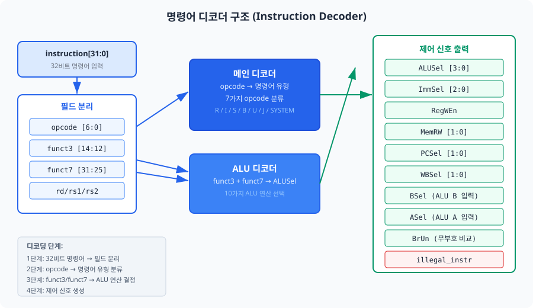
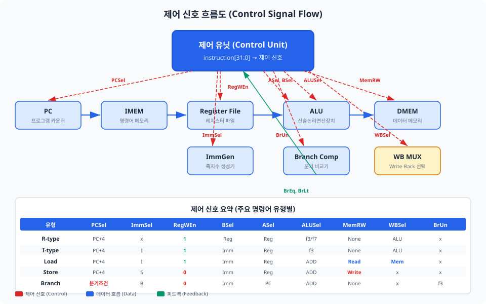
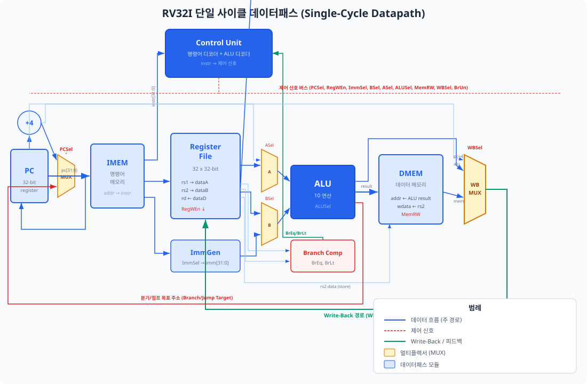
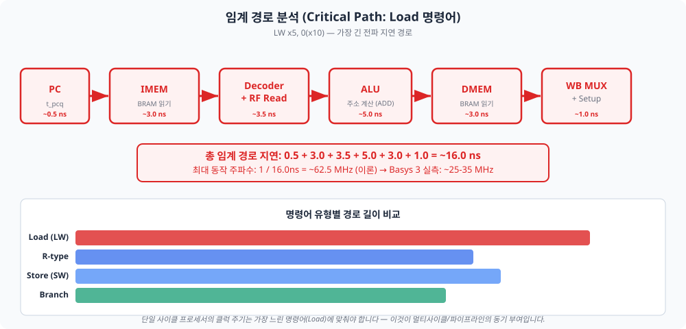

Chapter 04에서 만든 ALU·레지스터 파일·즉치수 생성기, Chapter 05에서 만든 명령어 메모리·데이터 메모리가 드디어 하나의 프로세서로 합쳐집니다. 이 챕터를 마치면 피보나치 수열을 실행하는 CPU를 손에 쥐게 됩니다. Part 2의 대미를 장식하는 첫 번째 대성취(大成就)의 순간입니다.
지금까지 우리는 프로세서의 "팔다리"를 만들었습니다. ALU는 계산을 수행하고, 레지스터 파일은 데이터를 보관하며, 메모리는 명령어와 데이터를 저장합니다. 그러나 이 부품들은 누군가 "지금 덧셈을 해라", "이 값을 메모리에 써라"고 지시하지 않으면 아무것도 하지 못합니다. 바로 그 지시를 내리는 것이 명령어 디코더(Instruction Decoder)입니다.
Chapter 03에서 배운 것처럼, RV32I 명령어 32비트에는 여러 필드가 담겨 있습니다. 디코더가 가장 먼저
보는 것은 opcode[6:0]입니다. 이 7비트만으로 명령어가 R/I/S/B/U/J 타입 중 어디에
속하는지, 그리고 대략 어떤 동작을 하는지 알 수 있습니다.
| opcode[6:0] | 명령어 유형 | 포함 명령어 | 개수 |
|---|---|---|---|
0110011 |
R 타입 | ADD, SUB, AND, OR, XOR, SLL, SRL, SRA, SLT, SLTU | 10 |
0010011 |
I 타입 (ALU) | ADDI, ANDI, ORI, XORI, SLTI, SLTIU, SLLI, SRLI, SRAI | 9 |
0000011 |
I 타입 (Load) | LW, LH, LB, LHU, LBU | 5 |
0100011 |
S 타입 (Store) | SW, SH, SB | 3 |
1100011 |
B 타입 (Branch) | BEQ, BNE, BLT, BGE, BLTU, BGEU | 6 |
1101111 |
J 타입 (JAL) | JAL | 1 |
1100111 |
I 타입 (JALR) | JALR | 1 |
0110111 |
U 타입 (LUI) | LUI | 1 |
0010111 |
U 타입 (AUIPC) | AUIPC | 1 |
1110011 |
SYSTEM | ECALL, EBREAK | 2 (구현 범위 외 참고) |
opcode만으로는 R 타입 내의 ADD와 SUB를 구분할 수 없습니다. 이때 funct3[14:12]과
funct7[31:25]이 등장합니다. 디코딩은 다음 순서로 진행됩니다.
opcode로 명령어 유형 분류 (9가지 그룹)funct3으로 세부 명령어 구분 (같은 opcode 내에서)funct7[5]로 최종 구분 (ADD vs SUB, SRL vs SRA)
R 타입과 I 타입 ALU 명령어는 같은 funct3 값을 공유합니다. 예를 들어, ADD와 ADDI는
모두 funct3 = 3'b000입니다. 둘을 구분하는 것은 opcode이며, ALU 연산 자체는 동일합니다.
따라서 ALU 디코더는 opcode 종류에 관계없이 funct3과 funct7[5]만으로
ALU 연산을 결정할 수 있습니다.
| funct3 | funct7[5]=0 | funct7[5]=1 |
|---|---|---|
000 | ADD | SUB |
001 | SLL | - |
010 | SLT | - |
011 | SLTU | - |
100 | XOR | - |
101 | SRL | SRA |
110 | OR | - |
111 | AND | - |
디코더의 핵심은 하나의 큰 always_comb 블록 안에 case 문으로 구현됩니다.
조합 논리(Combinational Logic)이므로 always_ff가 아닌 always_comb을
사용합니다. 가장 중요한 설계 규칙은 모든 경로에서 모든 출력에 값을 할당하는 것입니다.
그렇지 않으면 합성 도구가 래치(Latch)를 추론하여 의도하지 않은 순차 논리가 생깁니다.
// 명령어 디코더 — opcode 기반 제어 신호 생성
always_comb begin
// 기본값 설정 (래치 방지: 모든 출력에 안전한 기본값)
alu_sel = ALU_ADD;
imm_sel = IMM_I;
reg_w_en = 1'b0;
mem_rw = MEM_NONE;
pc_sel = PC_PLUS4;
wb_sel = WB_ALU;
a_sel = 1'b0; // rs1
b_sel = 1'b0; // rs2
br_un = 1'b0;
illegal_instr = 1'b0;
case (opcode)
OP_R_TYPE: begin // R 타입: register-register 연산
reg_w_en = 1'b1;
wb_sel = WB_ALU;
case (funct3)
3'b000: alu_sel = (funct7[5]) ? ALU_SUB : ALU_ADD;
3'b001: alu_sel = ALU_SLL;
3'b010: alu_sel = ALU_SLT;
// ... (10가지 ALU 연산)
endcase
end
OP_LOAD: begin // Load: 메모리 → 레지스터
reg_w_en = 1'b1;
b_sel = 1'b1; // 즉치수 선택
imm_sel = IMM_I;
alu_sel = ALU_ADD; // 주소 = rs1 + imm
mem_rw = MEM_READ;
wb_sel = WB_MEM; // 메모리 데이터를 Write-Back
end
OP_BRANCH: begin // Branch: 조건부 분기
a_sel = 1'b1; // PC
b_sel = 1'b1; // 즉치수
imm_sel = IMM_B;
alu_sel = ALU_ADD; // 분기 목표 = PC + imm
pc_sel = branch_taken ? PC_BRANCH : PC_PLUS4;
end
// ... (나머지 opcode 유형)
default: illegal_instr = 1'b1;
endcase
end
명령어 디코더가 "이 명령어는 R 타입 ADD이다"라고 판별했다면, 데이터패스의 각 모듈에 구체적인 동작 지시를 내려야 합니다. "ALU는 덧셈을 수행하라", "레지스터 파일에 결과를 기록하라", "다음 PC는 PC+4이다" 등의 지시가 바로 제어 신호(Control Signal)입니다. 이 절에서는 단일 사이클 데이터패스에 필요한 모든 제어 신호를 정의하고, 명령어 유형별로 어떤 값을 가져야 하는지 정리합니다.
단일 사이클 프로세서에는 다음 9가지 제어 신호가 필요합니다. 각 신호는 데이터패스의 멀티플렉서(MUX)나 인에이블(enable)을 제어합니다.
| 신호 이름 | 비트 폭 | 역할 | 제어 대상 |
|---|---|---|---|
PCSel |
2 | 다음 PC 값 선택 | PC 입력 MUX: PC+4 / 분기 목표 / JALR 목표 |
ImmSel |
3 | 즉치수 타입 선택 | 즉치수 생성기: I/S/B/U/J 타입 |
RegWEn |
1 | 레지스터 쓰기 인에이블 | 레지스터 파일: 1이면 rd에 데이터 기록 |
BSel |
1 | ALU B 입력 선택 | ALU B MUX: 0=rs2, 1=즉치수 |
ASel |
1 | ALU A 입력 선택 | ALU A MUX: 0=rs1, 1=PC |
ALUSel |
4 | ALU 연산 선택 | ALU: ADD/SUB/AND/OR/XOR/SLL/SRL/SRA/SLT/SLTU |
MemRW |
2 | 메모리 읽기/쓰기 | DMEM: 없음/읽기/쓰기 |
WBSel |
2 | Write-Back 소스 선택 | WB MUX: ALU 결과 / 메모리 데이터 / PC+4 |
BrUn |
1 | 분기 비교 모드 | 분기 비교기: 0=부호, 1=무부호 |

37개 명령어를 한 번에 표로 정리하면 압도적으로 느껴질 수 있습니다. 하지만 실제로는 같은 opcode를 공유하는 명령어들은 ALUSel을 제외한 나머지 제어 신호가 동일합니다. 따라서 우리는 명령어 유형별로 진리표를 분할하여 제시합니다.
R 타입 (ADD, SUB, AND, OR, XOR, SLL, SRL, SRA, SLT, SLTU)
| PCSel | ImmSel | RegWEn | BSel | ASel | ALUSel | MemRW | WBSel | BrUn |
|---|---|---|---|---|---|---|---|---|
| PC+4 | x | 1 | Reg | Reg | funct3/7 | None | ALU | x |
I 타입 ALU (ADDI, ANDI, ORI, XORI, SLTI, SLTIU, SLLI, SRLI, SRAI)
| PCSel | ImmSel | RegWEn | BSel | ASel | ALUSel | MemRW | WBSel | BrUn |
|---|---|---|---|---|---|---|---|---|
| PC+4 | I | 1 | Imm | Reg | funct3 | None | ALU | x |
Load (LW, LH, LB, LHU, LBU)
| PCSel | ImmSel | RegWEn | BSel | ASel | ALUSel | MemRW | WBSel | BrUn |
|---|---|---|---|---|---|---|---|---|
| PC+4 | I | 1 | Imm | Reg | ADD | Read | Mem | x |
Store (SW, SH, SB)
| PCSel | ImmSel | RegWEn | BSel | ASel | ALUSel | MemRW | WBSel | BrUn |
|---|---|---|---|---|---|---|---|---|
| PC+4 | S | 0 | Imm | Reg | ADD | Write | x | x |
Branch (BEQ, BNE, BLT, BGE, BLTU, BGEU)
| PCSel | ImmSel | RegWEn | BSel | ASel | ALUSel | MemRW | WBSel | BrUn |
|---|---|---|---|---|---|---|---|---|
| 조건부 | B | 0 | Imm | PC | ADD | None | x | funct3 |
JAL / JALR
| 명령어 | PCSel | ImmSel | RegWEn | BSel | ASel | ALUSel | MemRW | WBSel |
|---|---|---|---|---|---|---|---|---|
| JAL | Branch | J | 1 | Imm | PC | ADD | None | PC+4 |
| JALR | JALR | I | 1 | Imm | Reg | ADD | None | PC+4 |
LUI / AUIPC
| 명령어 | PCSel | ImmSel | RegWEn | BSel | ASel | ALUSel | MemRW | WBSel |
|---|---|---|---|---|---|---|---|---|
| LUI | PC+4 | U | 1 | Imm | 0* | ADD | None | ALU |
| AUIPC | PC+4 | U | 1 | Imm | PC | ADD | None | ALU |
* LUI에서 ASel=0(rs1 선택)이지만, 실제로는 rs1 값을 사용하지 않습니다. ALU A 입력을 0으로 처리하여 imm을 그대로 통과시킵니다.
분기 명령어의 PCSel은 "조건부"라고 적었습니다. 이 조건을 판정하는 것이 분기 비교기입니다.
두 레지스터 값(rs1, rs2)을 비교하여 BrEq(같음)와 BrLt(미만) 두 가지
결과를 제어 유닛에 피드백합니다. 제어 유닛은 이 피드백과 funct3을 조합하여 분기 여부를
결정합니다.
// 분기 비교기 (Branch Comparator)
module branch_comparator (
input logic [31:0] rs1_data,
input logic [31:0] rs2_data,
input logic br_un, // 1: 무부호 비교, 0: 부호 있는 비교
output logic br_eq, // rs1 == rs2
output logic br_lt // rs1 < rs2
);
always_comb begin
br_eq = (rs1_data == rs2_data);
if (br_un)
br_lt = (rs1_data < rs2_data); // 무부호 비교
else
br_lt = ($signed(rs1_data) < $signed(rs2_data)); // 부호 있는 비교
end
endmodule
분기 비교기를 ALU와 별도로 구현하는 이유는 무엇일까요? 단일 사이클에서는 ALU가 분기 목표 주소 계산(PC + imm)에 이미 사용되고 있기 때문입니다. 분기 조건 판정과 목표 주소 계산이 동시에 일어나야 하므로 별도의 비교기가 필요합니다.
| funct3 | 명령어 | 분기 조건 |
|---|---|---|
000 | BEQ | BrEq == 1 |
001 | BNE | BrEq == 0 |
100 | BLT | BrLt == 1 (부호) |
101 | BGE | BrLt == 0 (부호) |
110 | BLTU | BrLt == 1 (무부호) |
111 | BGEU | BrLt == 0 (무부호) |
이제 모든 부품이 준비되었습니다. Chapter 04에서 만든 ALU, 레지스터 파일, 즉치수 생성기. Chapter 05에서 만든 명령어 메모리, 데이터 메모리. 그리고 이 챕터에서 설계한 명령어 디코더와 분기 비교기. 이 모듈들을 하나로 연결하여 완전한 단일 사이클 프로세서를 만들 차례입니다.

Top-level 모듈(rv32i_single_cycle_top)이 모든 하위 모듈을 인스턴스화하고
신호를 연결합니다. 계층 구조는 다음과 같습니다.
rv32i_single_cycle_top // 최상위 모듈
├── instruction_memory // IMEM (비동기 읽기 ROM)
├── control_unit // 제어 유닛
│ ├── instruction_decoder // 명령어 디코더
│ └── branch_comparator // 분기 비교기
├── register_file // 레지스터 파일 (32×32)
├── immediate_generator // 즉치수 생성기
├── alu // ALU (10 연산)
└── data_memory // DMEM (바이트 주소 지정)
모듈 연결을 이해하는 가장 좋은 방법은 구체적인 명령어의 데이터 흐름을 따라가는 것입니다. 세 가지 대표 명령어로 추적해 봅시다.
경로 1: ADD x5, x6, x7 (R 타입)
경로 2: LW x5, 8(x10) (Load)
경로 3: BEQ x5, x6, label (Branch)
module rv32i_single_cycle_top #(
parameter IMEM_DEPTH = 1024,
parameter DMEM_DEPTH = 1024,
parameter IMEM_INIT = "" // .hex 초기화 파일 경로
)(
input logic clk,
input logic rst_n
);
// --- PC 레지스터 ---
logic [31:0] pc, pc_next, pc_plus4;
assign pc_plus4 = pc + 32'd4;
always_ff @(posedge clk or negedge rst_n) begin
if (!rst_n) pc <= 32'h0000_0000;
else pc <= pc_next;
end
// PC 다음 값 선택
always_comb begin
case (pc_sel)
PC_PLUS4: pc_next = pc_plus4;
PC_BRANCH: pc_next = alu_result;
PC_JALR: pc_next = alu_result & 32'hFFFF_FFFE;
default: pc_next = pc_plus4;
endcase
end
// --- 모듈 인스턴스 연결 ---
instruction_memory #(.DEPTH(IMEM_DEPTH), .INIT_FILE(IMEM_INIT))
u_imem (.addr(pc), .instr(instr));
control_unit u_control (
.instr(instr), .rs1_data(rs1_data), .rs2_data(rs2_data),
.alu_sel(alu_sel), .imm_sel(imm_sel), .reg_w_en(reg_w_en),
.mem_rw(mem_rw), .pc_sel(pc_sel), .wb_sel(wb_sel),
.a_sel(a_sel), .b_sel(b_sel), ...
);
register_file u_rf (
.clk(clk), .rst_n(rst_n),
.rs1_addr(rs1_addr), .rs2_addr(rs2_addr), .rd_addr(rd_addr),
.rd_data(rd_data), .reg_w_en(reg_w_en),
.rs1_data(rs1_data), .rs2_data(rs2_data)
);
// ALU 입력 MUX
assign alu_a = a_sel ? pc : rs1_data;
assign alu_b = b_sel ? imm : rs2_data;
alu u_alu (.a(alu_a), .b(alu_b), .alu_op(alu_sel), .result(alu_result));
data_memory #(.DEPTH(DMEM_DEPTH))
u_dmem (.clk(clk), .addr(alu_result), .wdata(rs2_data),
.mem_rw(mem_rw), .funct3(funct3), .rdata(dmem_rdata));
// Write-Back MUX
always_comb begin
case (wb_sel)
WB_ALU: rd_data = alu_result;
WB_MEM: rd_data = dmem_rdata_ext;
WB_PC4: rd_data = pc_plus4;
default: rd_data = alu_result;
endcase
end
endmodule
JALR 명령어는 PC 업데이트 시 한 가지 특수 처리가 필요합니다. RISC-V 스펙에 따르면
JALR의 목표 주소는 (rs1 + imm) & ~1, 즉 최하위 비트(LSB)를 0으로 강제합니다.
이는 목표 주소가 항상 2바이트 정렬(aligned)되도록 보장하기 위함입니다. 코드에서
alu_result & 32'hFFFF_FFFE로 구현했습니다.
하드웨어 설계에서 "코드를 작성했다"와 "동작을 확인했다"는 완전히 다른 차원의 일입니다. 이제 우리가 만든 단일 사이클 프로세서 위에서 실제 프로그램을 실행하여 올바르게 동작하는지 검증할 차례입니다. 검증 프로그램으로는 피보나치 수열(Fibonacci Sequence)을 선택했습니다. 피보나치는 간단하면서도 ADD, Store, Branch, 즉치수 연산 등 여러 명령어 유형을 한 번에 테스트할 수 있는 훌륭한 벤치마크입니다.
피보나치 수열은 F(0)=0, F(1)=1로 시작하여 F(n) = F(n-1) + F(n-2)로 정의됩니다. 우리 프로그램은 F(0)부터 F(11)까지 12개의 피보나치 수를 계산하여 데이터 메모리의 0x1000번지부터 순서대로 저장합니다.
| 주소 | 명령어 | 어셈블리 | 설명 |
|---|---|---|---|
| 0x000 | 00000513 | ADDI x10, x0, 0 | a0 = F(0) = 0 |
| 0x004 | 00100593 | ADDI x11, x0, 1 | a1 = F(1) = 1 |
| 0x008 | 00000693 | ADDI x13, x0, 0 | 루프 카운터 = 0 |
| 0x00C | 00A00713 | ADDI x14, x0, 10 | 최대 반복 = 10 |
| 0x010 | 000017B7 | LUI x15, 0x1 | 저장 주소 = 0x1000 |
| 0x014 | 00A7A023 | SW x10, 0(x15) | mem[0x1000] = F(0) |
| 0x018 | 00478793 | ADDI x15, x15, 4 | 주소 += 4 |
| 0x01C | 00B7A023 | SW x11, 0(x15) | mem[0x1004] = F(1) |
| 0x020 | 00478793 | ADDI x15, x15, 4 | 주소 += 4 |
| 0x024 | 00B50633 | ADD x12, x10, x11 | F(n) = F(n-2) + F(n-1) |
| 0x028 | 00C7A023 | SW x12, 0(x15) | 메모리에 F(n) 저장 |
| 0x02C | 00478793 | ADDI x15, x15, 4 | 주소 += 4 |
| 0x030 | 00058513 | ADDI x10, x11, 0 | a0 = a1 (값 시프트) |
| 0x034 | 00060593 | ADDI x11, x12, 0 | a1 = a2 (값 시프트) |
| 0x038 | 00168693 | ADDI x13, x13, 1 | 카운터++ |
| 0x03C | FEE6C4E3 | BLT x13, x14, -24 | 카운터 < 10이면 루프 |
| 0x040 | 00000013 | NOP | 프로그램 종료 |
| 0x044 | FFDFF06F | JAL x0, -4 | 무한 루프 (정지) |
이 프로그램 하나로 다음 명령어 유형을 모두 검증할 수 있습니다.
테스트벤치는 다음 세 단계로 검증을 수행합니다.
// 테스트벤치 핵심 부분
module rv32i_single_cycle_tb;
localparam CLK_PERIOD = 20; // 50 MHz
// DUT 인스턴스
rv32i_single_cycle_top #(
.IMEM_INIT("ch06_fibonacci_mem.hex")
) dut (.clk(clk), .rst_n(rst_n));
// 클록 생성
initial clk = 1'b0;
always #(CLK_PERIOD/2) clk = ~clk;
// 기대값: 피보나치 수열
int expected_fib [0:11] = '{0,1,1,2,3,5,8,13,21,34,55,89};
initial begin
rst_n = 1'b0;
repeat (5) @(posedge clk);
rst_n = 1'b1; // 리셋 해제
repeat (120) @(posedge clk); // 실행 대기
// 결과 검증: 데이터 메모리에서 피보나치 값 확인
for (int i = 0; i < 12; i++) begin
int addr = 32'h1000 + i * 4;
int mem_val = {dut.u_dmem.mem[addr+3], dut.u_dmem.mem[addr+2],
dut.u_dmem.mem[addr+1], dut.u_dmem.mem[addr]};
if (mem_val == expected_fib[i])
$display("F(%0d) = %0d [PASS]", i, mem_val);
else
$display("F(%0d) = %0d [FAIL] expected %0d", i, mem_val, expected_fib[i]);
end
$finish;
end
endmodule
Verdi나 Vivado 파형 뷰어에서 다음 신호를 관찰하면 CPU 동작을 효과적으로 디버깅할 수 있습니다.
| 신호 | 관찰 포인트 |
|---|---|
pc | 4씩 증가하다가 BLT에서 0x024로 복귀, 루프 종료 후 0x040~0x044 |
instr | 각 사이클마다 다른 명령어 출력 — NOP(0x13) 반복이면 이상 징후 |
alu_result | 피보나치 값(1,2,3,5,8,13...)과 메모리 주소(0x1000,0x1004...)가 교대 출현 |
reg_w_en | Store, Branch에서는 0, 나머지에서는 1 |
pc_sel | 대부분 PC+4, BLT 성공 시 Branch, 마지막 JAL에서 Branch |
regs[10]~[15] | 피보나치 값이 갱신되는 과정 확인 |
시뮬레이션이 올바르게 완료되면 다음과 같은 출력이 나타납니다.
==================================================
RV32I 단일 사이클 프로세서 통합 테스트
테스트 프로그램: 피보나치 수열 (F(0)~F(11))
==================================================
[100ns] 리셋 해제, 프로그램 실행 시작
--- 실행 완료: 레지스터 상태 확인 ---
x10 (a0) = 55 (기대값: 55)
x11 (a1) = 89 (기대값: 89)
x13 (a3) = 10 (루프 카운터, 기대값: 10)
--- 데이터 메모리 확인 (0x1000~) ---
F(0) = 0 [PASS]
F(1) = 1 [PASS]
F(2) = 1 [PASS]
F(3) = 2 [PASS]
F(4) = 3 [PASS]
F(5) = 5 [PASS]
F(6) = 8 [PASS]
F(7) = 13 [PASS]
F(8) = 21 [PASS]
F(9) = 34 [PASS]
F(10) = 55 [PASS]
F(11) = 89 [PASS]
==================================================
테스트 완료
==================================================
이 순간이 바로 Part 2의 대성취입니다. 여러분이 직접 설계한 CPU 위에서 프로그램이 실행되어 올바른 피보나치 수열을 계산했습니다. Chapter 01에서 LED를 깜빡이던 것과는 차원이 다른 성취입니다. 32비트 프로세서가 명령어를 읽고, 디코딩하고, 연산하고, 메모리에 쓰는 전체 과정이 여러분의 코드 위에서 동작한 것입니다.
시뮬레이션에서 올바른 결과를 얻었다면, 다음 단계는 FPGA에서 실제로 동작하는지 확인하는 것입니다. 그런데 합성(Synthesis)을 진행하면 시뮬레이션에서는 보이지 않던 새로운 개념이 등장합니다. 바로 타이밍(Timing)입니다. 시뮬레이션에서는 게이트 지연이 0이라고 가정했지만, 실제 FPGA에서는 모든 논리 게이트와 배선에 전파 지연(Propagation Delay)이 존재합니다.
단일 사이클 프로세서에서 가장 긴 전파 경로는 Load 명령어입니다. 데이터가 다음 경로를 거쳐야 하기 때문입니다.

총 지연은 약 16ns로, 이론적 최대 주파수는 1/16ns = 62.5 MHz입니다. 그러나 Basys 3의 Artix-7 FPGA에서 실제 합성하면 배선 지연(routing delay)과 기타 오버헤드가 추가되어 일반적으로 25~35 MHz 수준이 됩니다.
Vivado에서 합성 후 report_timing_summary를 실행하면 두 가지 핵심 지표가 나타납니다.
WNS(Worst Negative Slack)는 가장 나쁜 경우의 타이밍 여유(슬랙, Slack)입니다. 슬랙이란 "데이터가 도착해야 하는 시각"과 "실제로 도착하는 시각"의 차이입니다.
TNS(Total Negative Slack)는 타이밍을 위반한 모든 경로의 음의 슬랙 합계입니다. WNS가 하나의 최악 경로만 보는 반면, TNS는 전체적인 타이밍 위반 심각도를 나타냅니다. TNS = 0이면 어떤 경로도 타이밍을 위반하지 않았다는 뜻입니다.
Vivado에서 클록 제약을 100 MHz(10ns)로 설정하고 합성하면, 단일 사이클 프로세서는 거의 확실히 타이밍 위반이 발생합니다. 이는 정상적인 결과입니다.
| 항목 | 예상 값 | 비고 |
|---|---|---|
| LUT 사용량 | ~1,500 / 20,800 (약 7%) | 디코더, ALU, MUX 등 |
| FF 사용량 | ~1,100 / 41,600 (약 3%) | PC, 레지스터 파일 |
| BRAM 사용량 | 2~4 / 50 | IMEM, DMEM |
| 최대 동작 주파수 | 25~35 MHz | Load 명령어 임계 경로 기준 |
| WNS (@100MHz) | 약 -20ns (타이밍 위반) | 10ns 주기에 ~30ns 경로 |
| WNS (@25MHz) | 약 +10ns (타이밍 만족) | 40ns 주기에 ~30ns 경로 |
클록 제약을 25 MHz(40ns)로 낮추면 WNS가 양수가 되어 합성이 성공합니다. Basys 3의 기본 클록은 100 MHz이므로, Clocking Wizard IP를 사용하여 25 MHz로 분주(dividing)하거나 PLL(Phase-Locked Loop)로 원하는 주파수를 생성해야 합니다.
25 MHz는 1초에 2,500만 개의 명령어를 실행할 수 있으므로 교육 목적으로는 충분합니다. 그러나 실제 프로세서는 GHz 단위로 동작합니다. 우리의 단일 사이클 프로세서가 느린 이유는 모든 명령어가 가장 느린 명령어(Load)의 지연에 맞춰야 하기 때문입니다. ADD 명령어는 DMEM 접근이 필요 없어 훨씬 빠르게 끝나지만, 클록 주기는 Load에 맞춰져 있으므로 나머지 시간을 낭비합니다.
이 비효율을 해결하는 첫 번째 방법이 멀티사이클 프로세서(Chapter 07~08)입니다. 명령어마다 필요한 사이클 수를 다르게 하여 클록 주파수를 높입니다. 그리고 궁극적 해결책이 파이프라인 프로세서(Chapter 09~12)입니다. 각 스테이지를 동시에 실행하여 CPI(Cycles Per Instruction)를 1에 가깝게 유지하면서도 높은 클록 주파수를 달성합니다.
실습 시 다음 순서를 따르십시오.
create_clock -period 40.000 -name sys_clk [get_ports clk] (25 MHz)report_timing_summary에서 WNS/TNS 확인report_utilization에서 LUT/FF/BRAM 사용량 확인이 챕터에서 우리는 Part 2의 대미를 장식하는 첫 번째 대성취를 달성했습니다. 개별적으로 만들었던 ALU, 레지스터 파일, 즉치수 생성기, 명령어 메모리, 데이터 메모리를 명령어 디코더와 제어 유닛으로 연결하여 완전한 RV32I 단일 사이클 프로세서를 완성했습니다. 그리고 피보나치 수열 프로그램을 이 프로세서 위에서 실행하여 올바른 결과를 확인했습니다.